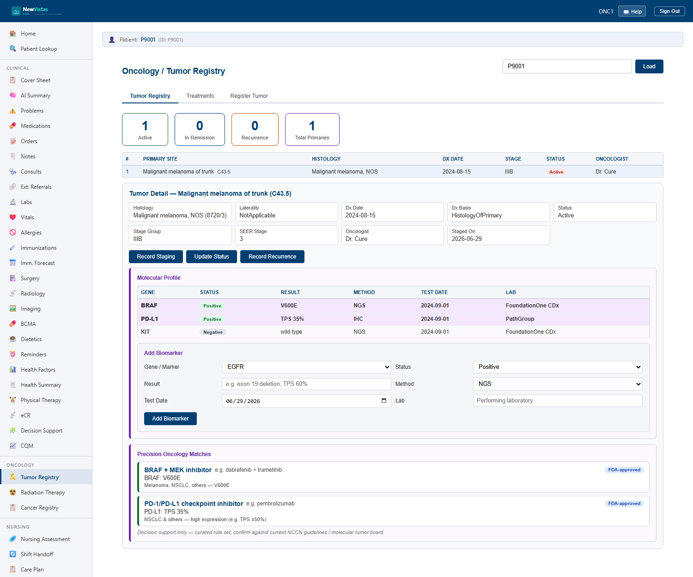

Oncology — Tumor Registry & Precision Medicine
The Oncology screen brings the tumor registry, molecular profile, and precision-oncology decision support together on one page. Register a primary cancer, stage it, track disease status, record biomarkers, and review the targeted and immunotherapy options matched to those biomarkers.
ONCOLOGY), with precision matching gated by
PRECISION_ONCOLOGY. If a section appears dimmed on your site,
the feature is turned off for that deployment.
Open Oncology
- In the sidebar, under Clinical, click Oncology (or go to
/oncology). - Confirm the patient in the patient bar, or pull one up from Patient Lookup.
- The page opens on the Tumor Registry, with the Molecular Profile and Precision Matches below.

The Tumor Registry
Register each primary cancer as its own tumor record. A patient may have more than one primary; record each separately so staging and treatment track to the right disease.
- Click Register Primary.
- Enter the primary site and the ICD-O-3 histology (morphology) code that describes the tumor type.
- Record TNM staging — both clinical (cTNM) and pathologic (pTNM) where available — and the SEER summary stage (in situ / localized / regional / distant).
- Set the disease status (e.g. active, in remission, recurrence) and update it as the course evolves.
- Click Save. The tumor appears in the registry list with its stage and status.
| Field | What it captures |
|---|---|
| Primary site | The anatomic site of origin of the tumor. |
| ICD-O-3 histology | Morphology / histologic type of the tumor. |
| TNM stage | Tumor / Node / Metastasis — recorded as clinical (cTNM) and pathologic (pTNM). |
| SEER summary stage | In situ, localized, regional, or distant spread. |
| Disease status | Active, in remission, or recurrence — tracked over time. |
The Molecular Profile
The molecular profile records the patient's biomarkers — the genes and proteins that drive treatment selection. There is one current result per gene: re-testing a gene upserts (replaces) the prior result rather than stacking duplicates.
- In the Molecular Profile section, click Add Biomarker.
- Enter the gene (e.g.
BRAF,EGFR,PD-L1). - Set the status: Positive, Negative, Equivocal, or Pending.
- Enter the result detail (e.g.
V600E, or a percent for an expression assay). - Choose the method: NGS, IHC, FISH, or PCR.
- Click Save. The biomarker shows in the profile; re-testing the same gene later updates this single current result.
| Field | Values |
|---|---|
| Gene | e.g. BRAF, EGFR, ALK, KRAS, PD-L1, HER2. |
| Status | Positive / Negative / Equivocal / Pending. |
| Result | The specific finding (variant, score, or percent). |
| Method | NGS / IHC / FISH / PCR. |
Precision-Oncology Matches
When a biomarker is recorded Positive, the matcher surfaces the targeted and immunotherapy options associated with that finding. For example, BRAF V600E matches a BRAF + MEK inhibitor combination, and PD-L1 expression matches a checkpoint inhibitor.
Who can read and edit
Oncology data is readable by any clinician — staging and
biomarkers inform care coordination across the chart, so this is not a
privacy silo the way Mental Health is. Editing the registry,
molecular profile, or matches requires the ONCO MANAGER
security key, which is held by oncologists.
- To edit, sign in as an oncologist — for the demo, user
ONC1(passwordsmythVista1). - Clinicians without the key see the same data read-only; the edit actions are hidden.